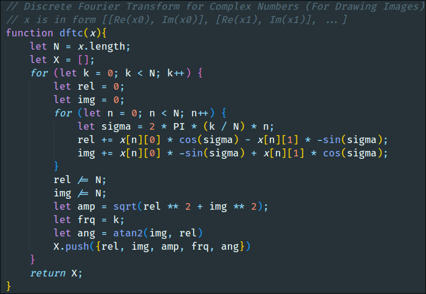

<html>

<head>
    <meta charset="UTF-8">
    <script language="javascript" type="text/javascript" src="p5.js"></script>
    <script language="javascript" type="text/javascript" src="p5.dom.js"></script>
    <script language="javascript" type="text/javascript" src="sketch.js"></script>
    <script language="javascript" type="text/javascript" src="spot.js"></script>
  <link rel="shortcut icon" href="../include/img/profile.png" type="image/x-icon">
  <link rel="stylesheet" href="style_.css">
  
</head>
<!--
  <body data-bs-theme="light">
    <!-- Navbar --
    <nav class="navbar navbar-expand-lg bg-dark py-3" data-bs-theme="dark">
	  <div class="container">
		<a class="navbar-brand" href="../home">Página inicial</a>
		<button class="navbar-toggler" type="button" data-bs-toggle="collapse" data-bs-target="#navContent">
		  <span class="navbar-toggler-icon"></span>
		</button>
		<div class="collapse navbar-collapse" id="navContent">
		  <ul class="navbar-nav ms-auto">
			<li class="nav-item"

			<li class="nav-item">
			  <a class="nav-link" href="../journey">O que é ML?</a>
			</li>
			<li class="nav-item">
			  <a class="nav-link" href="index.html">O que é DL?</a>
			</li>

			<li class="nav-item">
			  <a class="nav-link" href="../journey">O que é IA?</a>
			</li>
			<li class="nav-item">
			  <a class="nav-link" href="qubit.html">O que é Qubit?</a>
			</li>
			<li class="nav-item">
			  <a class="nav-link" href="Demo-dynamic-chart-3/Wave-Velocity.html">Wavelets?</a>
			</li>
			<li class="nav-item">
			<a class="nav-link" href="../journey">O que é FT? (Transformada de Fourier)</a>
			</li>
			<li class="nav-item">
			  <a class="nav-link" href="FFT/TransformFFT/index.html">O que é FFT?</a>
			</li>

			<li class="nav-item">
			  <a class="nav-link" href="../journey">O que é STFT?</a>
			</li>
			<li class="nav-item">
			  <a class="nav-link" href="index.html">O que é DCT?</a>
			</li>

			<li class="nav-item">
			  <a class="nav-link" href="../journey">O que é CWT?</a>
			</li>
			<li class="nav-item">
			  <a class="nav-link" href="index.html">O que é DWT?</a>
			</li>


		  </ul>
		</div>
	  </div>
    </nav>
    <!-- What is DFT? --
    <section class="py-5 bg-info" id="what">
	  <div class="container-md">
		<div class="row align-items-center">
		  <div class="col-12 col-md-6 mb-3">
			<!--<p>Sistema de decodificação digital</p>
			<p class="fs-5">Os dados são dividido em parte para 3 núcleo de processamentos, que realiza uma varredura de cáculo entre as mesmas de forma totalmente analógica. </p>
			<p id="clickme">Modo simples</p>
			</div><!--
		  <div class="col-12 col-md-6 mb-3">
		  
		  </div>
		  </div>
		  </div>
		  </section>
		  <!-- How DFT is used here? --
		  <section class="py-5" id="how">
		  <div class="container-md">
		  <div class="row align-items-center">
		  <div class="col-12 col-md-6 mb-3">
		  
		  </div>
		  <div class="col-12 col-md-6 mb-3">
		  <p class="fs-1 text-center mb-3 fw-bold">Como o DFT é utilizado aqui?</p>
		  <p class="fs-5">Existem duas maneiras pelas quais o DFT pode ser utilizado neste programa. <br> <br> O algoritmo ilustrado <span class="d-none d-md-inline">à esquerda</span><span class="d-md-none">acima</span> Esta é a principal função deste aplicativo. Ele recebe uma lista de coordenadas como entrada e a executa através do DFT algoritmo e gera informações para desenhar uma infinidade de ondas (como círculos). <br> <br> A segunda maneira (atualmente não implementada) é apenas passar uma série de coordenadas y, podendo recriar qualquer onda como uma infinidade de ondas com frequências diferentes (mais uma vez, representadas como círculos), assumindo que os pontos estão se movendo distância (como se o eixo x fosse o tempo).</p>
		  </div>
		  </div>
		  </div>
		  </section>
		  <!-- Image Input --
		  <section class="py-3 bg-primary text-light" id="project">
		  <div class="container-md mb-3" id="input">
		  <p class="fs-4 text-center fw-bold">Carregue uma imagem ou desenhe um contorno</p>
		  </div>
		  </section>-->
		  
  
<style>
	
.node {
  cursor: pointer;
}

.node circle {
  fill: #fff;
  stroke: steelblue;
  stroke-width: 5px;
}

.node text {
  font: 2px sans-serif;
}

.link {
  fill: none;
  stroke: #ccc;
  stroke-width: 5px;
}

body {
  margin: 0;
  padding: 0;
  font-family: "Lato", sans-serif;
  font-size: 20pt;
  font-weight: normal;
  /*background: lightblue; /* For browsers that do not support gradients */
  background: -webkit-linear-gradient(
    -90deg,
    lightblue,
    black
  ); /* For Safari 5.1 to 6.0 */
  background: -o-linear-gradient(
    -90deg,
    lightblue,
    black
  ); /* For Opera 11.1 to 12.0 */
  background: -moz-linear-gradient(
    -90deg,
    lightblue,
    black
  ); /* For Firefox 3.6 to 15 */
  background: linear-gradient(-90deg, lightblue, black); /* Standard syntax */
}

.main {
  margin: 50px auto;
  text-align: rigth;
}

button {
  padding: 40px;
  background: transparent;
  text-shadow: 1px 1px 1px #202020;
  font-family: "Lato", sans-serif;
  font-size: 25pt;
  border: 1px solid lightblue;
  color: lightblue;
}
</style>
<body>
  <div class="main">
	   
  <!--<button type="button" onClick="window.location.reload()">
	Reload Page
  </button> -->
  </div>
</body>
<script> 
  
  var button = document.getElementById("clickme"),

  count = 0;
  button.onclick = function() {
  count += 1;
  button.innerHTML = "Modo simples ativo: " ;//+ count; 
  window.location.reload();
  count=1;

  };
  </script>
</html>
